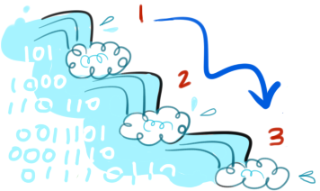

- Input needed?
- Problem-solving process?
- Output expected?
The following is a small collection of strategies for starting, fixing, and finishing a Java homework assignment. It includes tips, things to remember, and resources you are encouraged to chek out if you ever feel lost during the process. Good luck and have fun programming!
Solve the problem by hand first by outlining it on paper or drawing it on a white board. Try using:
Keep track of the answer you get during this planning stage and use it to test your program's results later.
Break your problem into smaller pieces now, so you can write short, readable, and reusable methods.
/**********************
* Write your header,
* algorithm, and some
* method headers/stubs
* first. You can even
* write a comment for
* each big step, and
* fill in the code
* below as you go.
*********************/
*Sometimes this is called "rubber duck debugging".
Go through the steps of your program and verbally describe what's happening in each line.
Can you follow the code from one method call to the next?
Can you determine what data is being stored in your objects at any given moment?
| Unbalanced brackets | Close all your {}, [], and ()! |
| Missing method parameters | When you call a method, don't forget its list of parameters. If there are none, you still need the empty (). |
| Misspelled variable names | When you get a "symbol not found" error, it might be this. Remember that variable names are case-sensitive! |
| Missing import statements | Sometimes your "symbol not found" error is this too. |
| Assignment vs. comparison operator | When comparing terms for an if statement or boolean, use "==". When assigning a value to a variable, use "=". |
| Static vs. instance methods | Static--can call these using the class name, with no object. Instance--use must first instantiate an object of the class and then use it to call the method. |
| Forgotten or unneccessary semi-colons | Use semi-colons inside for statement conditions, not after. Use a semi-colon at the end of a do-while condition, not a while. |
| Missing break statement | Don't forget these for each case in your switch statement, unless you want the upper case to also execute the statements in the one below it. |
| Uninitialized variables | If you get this error, be sure to set your variables to some temporary default value after you declare them. |
| Incorrect file name | File name should be same as class name and end with ".java". |
Can you simplify your code or break it down into more reusable sub-methods to prevent repetitive statements?
Could your program be more user-friendly?
Make note of the things you learned from the assignment--maybe something that didn't make sense in class is now way more understandable with this homework example.
If you ran into some error that took you forever to fix, consider writing it down to remember the next time you encounter it.
Even if you didn't complete the assignment perfectly, be sure to show your work and explain what you learned from the experience!